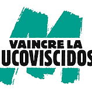
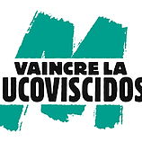

Après trois ans de formation générale en gestion en France et à l'étranger, je suis actuellement étudiante en M1 Marketing, Ventes à Grenoble IAE. Je recherche aujourd'hui un stage de 4 mois minimum dès avril 2021, en relation avec le sport ou le tourisme.
Vous allez découvrir dans ce site les expériences et centres d'intérêt qui m'ont fait grandir et ont fait mûrir mon projet professionnel.
 
